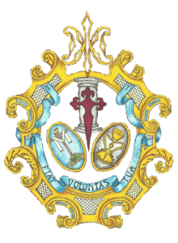

Humildad y Pilar
Parroquia Nuestra Señora de los Ángeles y San José de Calasanz
Hermandad de Nuestro Padre Jesús de la Humildad en Getsemaní, Nuestra Señora del Pilar en su Mayor Dolor y Santiago Apóstol

Numero de hermanos
390
Nazarenos
110
Autores
Nuestro Padre Jesús de la Humildad es obra de Jose María Leal Bernáldez (2021). Nuestra Señora del Pilar es obra de Jose María Leal Bernáldez (2014).
Capataces
Francisco Martín Piosa como Capataz General y Auxiliares
Música
A.M. Nuestra Señora de la Estrella, tras el Señor y B.M. del Rosario de Sanlucar la Mayor tras el Palio.
RECORRIDO
| Hora | Cruz de guía |
|---|---|
| 19:00 | Salida |
| -- | Avenida Madre Paula Montalt |
| 19:30 | Avenida de los Pinos |
| -- | Bérgamo |
| 20:00 | Edificio España |
| -- | Cruce de la Avenida de Montequinto |
| 20:30 | Rómulo |
| -- | Cicerón |
| 21:00 | Nerva |
| -- | Callejón trasero Entretorres |
| 21:30 | Virgilio |
| -- | Aureliano |
| 22:00 | Avenida de Montequinto |
| -- | Avenida Madre Paula Montalt |
| 23:00 | Entrada |